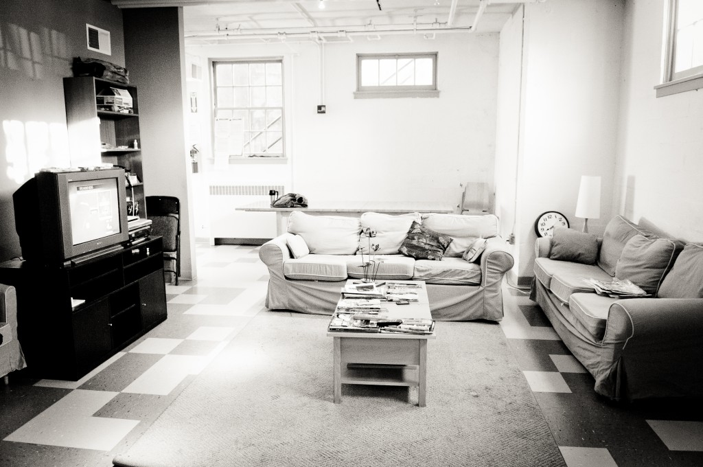

A model collaboration between a community of faith and a community of neighbors providing case management and recovery support services, transitional shelter, and nourishment to homeless men since 1991.
Our Mission
St. Luke’s Shelter exists to help people who are experiencing homelessness reclaim and rebuild their lives through providing transitional shelter, emergency shelter, collaborative case management.
Our Work
Our six-bed, six-month transitional shelter for men, open 365 days a year, provides a safe, sober and structured environment, collaborative case management, and life skills training. As very few organizations exist in upper northwest DC that provide this integrated life-reclaiming support, St. Luke’s Shelter is often the pivotal stop on someone’s journey out of homelessness. Since 1991, our services and partnerships have helped more than 375 homeless men achieve their housing, employment, recovery and health goals.
To respond to the lack of emergency beds in Ward 3, St. Luke’s Shelter opened a hypothermia shelterin December 2004 to provide refuge to up to 35 men on freezing cold nights. Meals are provided by D.C. Central Kitchen.